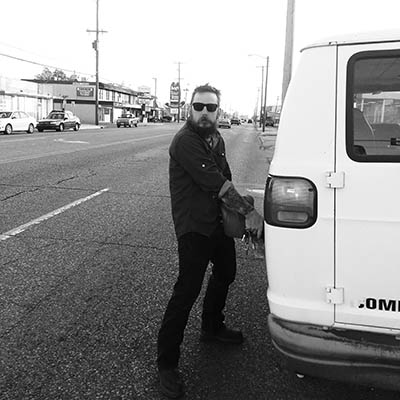

In memoriam
Friends and colleagues honor Lee Roy Chapman

Western Doughty
Local historian, journalist, artist and activist Lee Roy Chapman passed away this month. Tulsa is worse for his absence.
Lee made it his mission to unearth our city’s forgotten and buried histories. He challenged authority and the status quo and made enemies in high places. He lived for knowledge; if he wasn’t at the library, he was at the Tulsa Historical Society, or Oak Tree Books, or This Land, or on a road trip to view some rare artifact. As a journalist, he exposed the truth about Tate Brady’s connection to the Klan and his role in the 1921 race massacre. That story led to a larger conversation about our city’s legacy of racism, and a serious debate over whether we should keep the Brady name.
Lee Roy and I worked together on occasion, producing one published story and a handful of false starts. He often acted as my unwanted conscience, challenging me on the efficacy of articles I wrote, challenging me to write better stories that mattered, and showing little patience for any hint of outrage fatigue or establishment sympathy. I never knew where I stood with him on any given day—sometimes I’d run into him and he would compliment something I wrote and make me feel like a million bucks; other times I’d see him and get a lecture on how and why I was “doin’ it wrong.” His disappointment stung. But I’ll miss it. I needed the sting, and still do. So does Tulsa.
—Joshua Kline,
contributing editor,
The Tulsa Voice
Ikiru: to live
I’m staring at this screen, trying to think of a way to write about my friend. It’s counterintuitive, because as much as I have to say, everything Lee Roy and I did together was spontaneous. Something would come up, and he’d badger me with “C’mon!” until I acquiesced. Whether we dropped everything and drove to West Texas or just met for 4 a.m. breakfast at Waffle House. Feel the moment, get moving, and live. So I don’t want to stop and reflect on our time together, because that forces the realization that my phone or doorbell will never ring again.
When Lee Roy called, you never knew if it would be a midnight mission to unearth history, or just the periodic plea to jump his battery. And you knew he’d never replace it, but that was okay, because it was a guarantee you’d see him again soon. Sometimes I would put up a fight, but he knew he’d win me over in the end, because every time we got together, something great was going to happen. We’d create it.
Regardless of who we came across on our adventures, whether power brokers or the servers at Waffle House, Lee Roy could talk to anyone. He held his own—no pretense. All he wanted was authenticity. If he sensed vapid societal conventions, he’d zero in on you and go for the jugular. But if you were just straight with him, he’d love you.
There was no time for bullshit, because ikiru.
—Western Doughty,
photographer
Oh my brother Lee Roy Chapman. My heart breaks for you. And for Tulsa. I’ve struggled with what to say, if anything, as the cut is too deep, the wound too raw. “Tulsa is a bit smaller, a bit colder tonight for the loss,” as my friend TJ said. There was just no one like him, and I feel lucky to have been his friend and sometime collaborator. He was difficult for sure, but he always meant well.
I first met him about 25 years ago, and he had a profound influence on my life. I feel so fortunate that he and I recently completed our program examining the origins of Rock & Roll and its connection to Tulsa and Bob Wills. It’s a work I’m so proud of. Yet I’m so disappointed none of us will be able to ask him about obscure Tulsa lore or music or any of the million subjects he knew something interesting about. I can’t believe I will never be able to talk to him again.
I don’t know anyone who cared as deeply and thoughtfully about Tulsa as Lee Roy. He was a pot stirrer and so much more. TJ suggested we all get together to erect a monument, a mural, a work of art of some type in his honor, to remember him by. Godspeed Brother Lee Roy. Words do not do it justice. You are powerfully missed.
—Scott Large,
friend and collaborator
It’s hard to know where to begin when talking about someone as anomalous as Lee Roy. However much he could dole it out, he could take it just the same, and you could argue with the guy one minute and he would come help you move the next. I recall a time probably seven or eight years ago when I was really depressed and he came over to my place and cheered me up by just being a GOOBER. And talk about a genius! He really was so many different, interesting people encased in one human body.
I can still hear his laugh, and I hope none of us ever forget how that sounds. As he said a couple months ago when we were talking about how hard life can be, “There ARE no breaks, them’s the breaks.” We’re all feeling that now, Lee.
—Stephanie Oliver,
musician
Lee was always looking for commonalities. He was willing to point out injustice but wasn’t looking to punish. He was looking to heal. He identified with the common man. He looked for the thread that runs through our culture and looked for where multiple strands intertwined and where strands perhaps may have frayed.
He educated me on the greatness of my place—Oklahoma and Tulsa—and its special uniqueness culturally and its importance in the larger world. In a town that for many years had an inferiority complex, Lee was one of the few who had the courage and confidence to say that Tulsa was, in fact, bad ass, and Lee didn’t want it to be a secret.
—Dan Riffe,
musician

I first met Lee Roy Chapman through a mutual friend, Kristi Williams. I noticed right away that he was a passionate historian whose knowledge of Oklahoma history made him one of the most sought after individuals in and out of the state. I recall riding with him in his beloved white van and listening to history flow out of him like music from an old time radio. His ability to unearth the truth about Oklahoma history made him like a modern Sherlock Holmes.
The most I ever learned about Black Wall Street came from Lee Roy, and he allowed me to video our conversations as we traveled to some of the most historical places in Oklahoma. Not only was he an outstanding researcher, but he was also a champion for justice and equality. Lee Roy was instrumental in the attempt to change the name of Brady Street, and he also helped to collect signatures for a petition to convene a grand jury to investigate a local sheriff.
The last time I saw Lee Roy, he gave me a book. It was the autobiography of Winnie Mandela titled Part of My Soul Went with Him. That title has new meaning for me because I feel Lee Roy left a part of his soul with us. His soul will be with us on the days when we are weary, during our moments of triumph, and his soul will be with us in the silent awe when another historical truth is unearthed.
—Marq Lewis,
community leader,
We the People Oklahoma
I’ve lost count of the number of times Lee Roy Chapman was a pain in my ass. He was one of us who did the work of journalism, but he held our feet to the fire just as he did for anyone else, sometimes sitting on our legs for days on end. As part of that, he was a generous mentor, willing to part with a closely held contact, an afternoon’s conversation, or the time it took to visit that obscure archive he knew for anyone he believed was willing to put some miles on her boots.
As an editor, I was both aggravated and humbled by him, often in the space of the same few minutes. As a friend, I got to watch him aggravate and humble people we both loved, and to be there to watch them return the favor. As a Tulsan, I will always count it a privilege that our years in this city overlapped, and that for the rest of my life I get to watch the ripples raised by his work and his love for this city (each a reflection of the other) as they spread outward, toward his grandchildren and mine.
—Natasha Ball,
former editor,
The Tulsa Voice and This Land
It’s good to lift a glass to Lee; good and healthy for our grief, but probably not preferred by him. Ceremonial glass lifting wasn’t his thing. He hated the glass lifted to Woody Guthrie in the Brady. He knew a memorial doesn’t mean shit when “don’t pay the panhandler” signs are right across the street from the Mural That Kills Fascists. What Lee would want us to do, is go out into our great Oil City, get our hands elbow deep in our tar pits, pull up our sacred skeletons and head butt their damn teeth out. And never ever, for Lee’s sake, let sleeping corpses lie.
So sing it loud and proud for him: Tate Brady didn’t just own businesses downtown, or store his cars in Cain’s Ballroom; he was a Klansman and domestic terrorist, he was a 1921 genocide participant, and he is who our Arts District is named after.
—Mitch Gilliam,
contributor,
The Tulsa Voice
Lee Roy was a true scholar of Tulsa history whose contributions to preserving our unique story will be unmatched for some time to come; it was the combination of his unflinching fascination with the dark side of Oklahoma’s past mixed with his obsession with the minutia in the back alleys of pop culture that made him a force of nature. Lee Roy was one of those people who didn’t have the ideal credentials to do what he was doing, but the fact that he was able to bring the Bobs Wills Revolution to the forefront of the national media upgraded him from a mad street prophet to a dangerous annoyance. Shit-Stirrer? You bet he was! (Like most good people!!!) He reminded Tulsa of their shameful, racist past, and they figured out a way to ignore it on an epic level.
Ultimately, Lee Roy Chapman will be remembered like a Lee Roy Chapman story: a shadowy figure darting around in the art deco of Tulsa’s collective consciousness. He was like a Larry Clark photo, himself, as tragic as he was beautiful, he confronted people with information they did not want to deal with, and he was a part of this city that the city leaders would rather ignore.
I’m looking forward to one day reading a story by a young writer on the mysterious death of Lee Roy Chapman. I cannot think of a more fitting tribute. It beats changing the name of T.U.’s Chapman Hall to “Lee Roy Chapman Hall!”
—Wilhelm Murg,
writer
Lee Roy Chapman was the rebellious and loud big brother I never had. How do you sum up almost 30 years of friendship?
From the time I was pregnant with my son 18 years ago and he was living in our garage apartment up until these past few years that he would pop in, take a nap on the couch, do laundry, and bring me a book. He was so good to us and would often offer to help do “man stuff” around the house. He was great at fixing broken windows. He always had some great wisdom for Bodhi and a book for me.
In true Chapman form, his son that he loved so much, Kasper, gave me a book of his own that he’d written.
“I love you, Sunny” was something that he made sure to tell me anytime we saw each other. Lucky me got to bottle up his essence for many years. I plan on sprinkling it liberally whenever the time is right. Actually, when the time isn’t right will probably be more appropriate.
—Sunny Mills,
friend
.jpg)
.jpg)